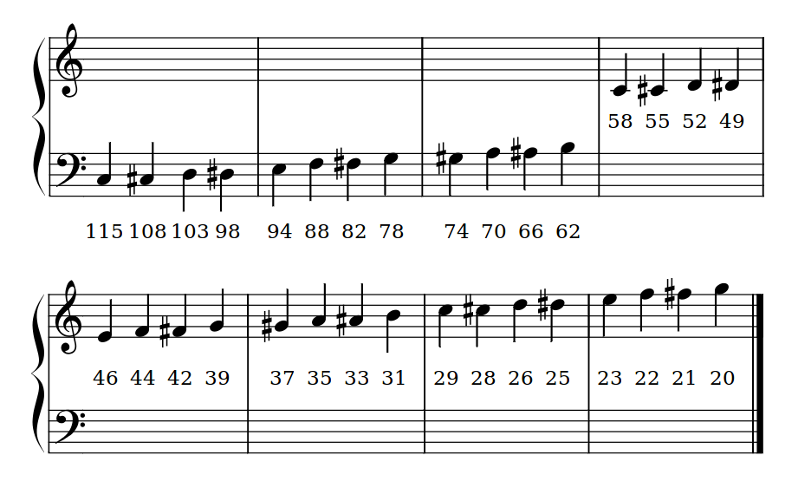

Speech¶
Warning
WARNING! THIS IS ALPHA CODE.
We reserve the right to change this API as development continues.
The quality of the speech is not great, merely “good enough”. Given the constraints of the device you may encounter memory errors and / or unexpected extra sounds during playback. It’s early days and we’re improving the code for the speech synthesiser all the time. Bug reports and pull requests are most welcome.
Computers and robots that talk feel more “human”.
So often we learn about what a computer is up to through a graphical user interface (GUI). In the case of a BBC micro:bit the GUI is a 5x5 LED matrix, which leaves a lot to be desired.
Getting the micro:bit talk to you is one way to express information in a fun, efficient and useful way. To this end, we have integrated a simple speech synthesiser based upon a reverse-engineered version of a synthesiser from the early 1980s. It sounds very cute, in an “all humans must die” sort of a way.
With this in mind, we’re going to use the speech synthesiser to create…
DALEK Poetry¶

It’s a little known fact that DALEKs enjoy poetry ~ especially limericks. They go wild for anapestic meter with a strict AABBA form. Who’d have thought?
(Actually, as we’ll learn below, it’s The Doctor’s fault DALEKs like limericks, much to the annoyance of Davros.)
In any case, we’re going to create a DALEK poetry recital on demand.
Say Something¶
Before the device can talk you need to plug in a speaker like this:

The simplest way to get the device to speak is to import the speech module
and use the say function like this:
import speech
speech.say("Hello, World")
While this is cute it’s certainly not DALEK enough for our taste, so we need to change some of the parameters that the speech synthesiser uses to produce the voice. Our speech synthesiser is quite powerful in this respect because we can change four parameters:
pitch- how high or low the voice sounds (0 = high, 255 = Barry White)speed- how quickly the device talks (0 = impossible, 255 = bedtime story)mouth- how tight-lipped or overtly enunciating the voice sounds (0 = ventriloquist’s dummy, 255 = Foghorn Leghorn)throat- how relaxed or tense is the tone of voice (0 = falling apart, 255 = totally chilled)
Collectively, these parameters control the quality of sound - a.k.a. the timbre. To be honest, the best way to get the tone of voice you want is to experiment, use your judgement and adjust.
To adjust the settings you pass them in as arguments to the say function.
More details can be found in the speech module’s API documentation.
After some experimentation we’ve worked out this sounds quite DALEK-esque:
speech.say("I am a DALEK - EXTERMINATE", speed=120, pitch=100, throat=100, mouth=200)
Poetry on Demand¶
Being Cyborgs DALEKs use their robot capabilities to compose poetry and it turns out that the algorithm they use is written in Python like this:
# DALEK poetry generator, by The Doctor
import speech
import random
from microbit import sleep
# Randomly select fragments to interpolate into the template.
location = random.choice(["brent", "trent", "kent", "tashkent"])
action = random.choice(["wrapped up", "covered", "sang to", "played games with"])
obj = random.choice(["head", "hand", "dog", "foot"])
prop = random.choice(["in a tent", "with cement", "with some scent",
"that was bent"])
result = random.choice(["it ran off", "it glowed", "it blew up",
"it turned blue"])
attitude = random.choice(["in the park", "like a shark", "for a lark",
"with a bark"])
conclusion = random.choice(["where it went", "its intent", "why it went",
"what it meant"])
# A template of the poem. The {} are replaced by the named fragments.
poem = [
"there was a young man from {}".format(location),
"who {} his {} {}".format(action, obj, prop),
"one night after dark",
"{} {}".format(result, attitude),
"and he never worked out {}".format(conclusion),
"EXTERMINATE",
]
# Loop over each line in the poem and use the speech module to recite it.
for line in poem:
speech.say(line, speed=120, pitch=100, throat=100, mouth=200)
sleep(500)
As the comments demonstrate, it’s a very simple in design:
- Named fragments (
location,prop,attitudeetc) are randomly generated from pre-defined lists of possible values. Note the use ofrandom.choiceto select a single item from a list. - A template of a poem is defined as a list of stanzas with “holes” in them (denoted by
{}) into which the named fragments will be put using theformatmethod. - Finally, Python loops over each item in the list of filled-in poetry stanzas and uses
speech.saywith the settings for the DALEK voice to recite the poem. A pause of 500 milliseconds is inserted between each line because even DALEKs need to take a breath.
Interestingly the original poetry related routines were written by Davros in FORTRAN (an appropriate language for DALEKS since you type it ALL IN CAPITAL LETTERS). However, The Doctor went back in time to precisely the point between Davros’s unit tests passing and the deployment pipeline kicking in. At this instant he was able to insert a MicroPython interpreter into the DALEK operating system and the code you see above into the DALEK memory banks as a sort of long hidden Time-Lord Easter Egg or Rickroll.
Phonemes¶
You’ll notice that sometimes, the say function doesn’t accurately translate
from English words into the correct sound. To have fine grained control of the
output, use phonemes: the building-block sounds of language.
The advantage of using phonemes is that you don’t have to know how to spell! Rather, you only have to know how to say the word in order to spell it phonetically.
A full list of the phonemes the speech synthesiser understands can be found in
the API documentation for speech. Alternatively, save yourself a lot of time by
passing in English words to the translate function. It’ll return a first
approximation of the phonemes it would use to generate the audio. This result
can be hand-edited to improve the accuracy, inflection and emphasis (so it
sounds more natural).
The pronounce function is used for phoneme output like this:
speech.pronounce("/HEH5EH4EH3EH2EH2EH3EH4EH5EHLP.”)
How could you improve on The Doctor’s code to make it use phonemes?
Sing A Song of Micro:bit¶
By changing the pitch setting and calling the sing function it’s
possible to make the device sing (although it’s not going to win Eurovision any
time soon).
The mapping from pitch numbers to musical notes is shown below:
The sing function must take phonemes and pitch as input like this:
speech.sing("#115DOWWWW")
Notice how the pitch to be sung is prepended to the phoneme with a hash
(#). The pitch will remain the same for subsequent phonemes until a new
pitch is annotated.
The following example demonstrates how all three generative functions (say,
pronounce and sing) can be used to produce speech like output:
"""
speech.py
~~~~~~~~
Simple speech example to make the micro:bit say, pronounce and sing
something. This example requires a speaker/buzzer/headphones connected
to P0 and GND,or the latest micro:bit device with built-in speaker.
"""
import speech
from microbit import sleep
# The say method attempts to convert English into phonemes.
speech.say("I can sing!")
sleep(1000)
speech.say("Listen to me!")
sleep(1000)
# Clearing the throat requires the use of phonemes. Changing
# the pitch and speed also helps create the right effect.
speech.pronounce("AEAE/HAEMM", pitch=200, speed=100) # Ahem
sleep(1000)
# Singing requires a phoneme with an annotated pitch for each syllable.
solfa = [
"#115DOWWWWWW", # Doh
"#103REYYYYYY", # Re
"#94MIYYYYYY", # Mi
"#88FAOAOAOAOR", # Fa
"#78SOHWWWWW", # Soh
"#70LAOAOAOAOR", # La
"#62TIYYYYYY", # Ti
"#58DOWWWWWW", # Doh
]
# Sing the scale ascending in pitch.
song = ''.join(solfa)
speech.sing(song, speed=100)
# Reverse the list of syllables.
solfa.reverse()
song = ''.join(solfa)
# Sing the scale descending in pitch.
speech.sing(song, speed=100)